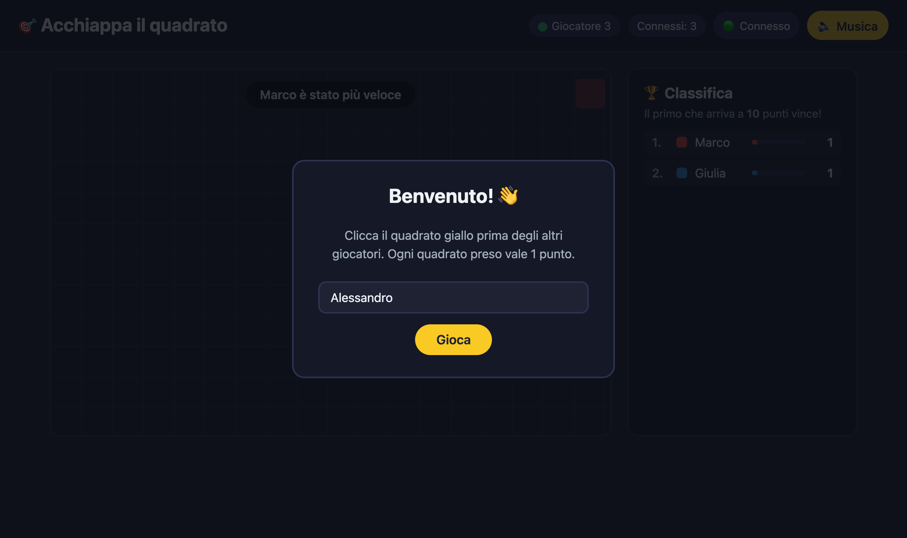
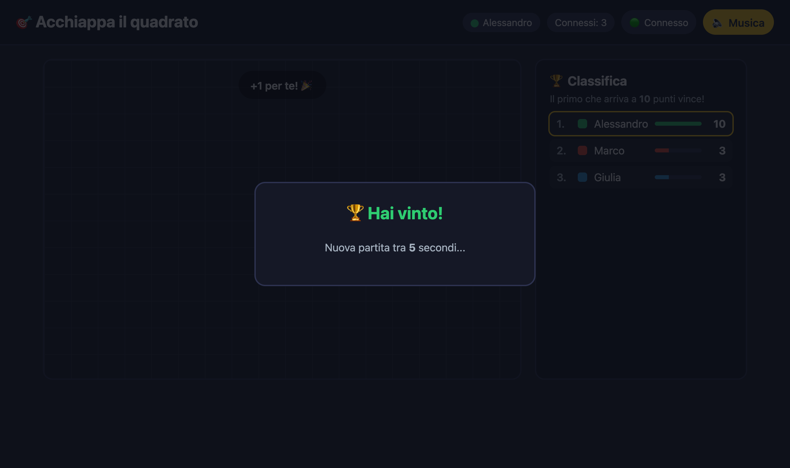
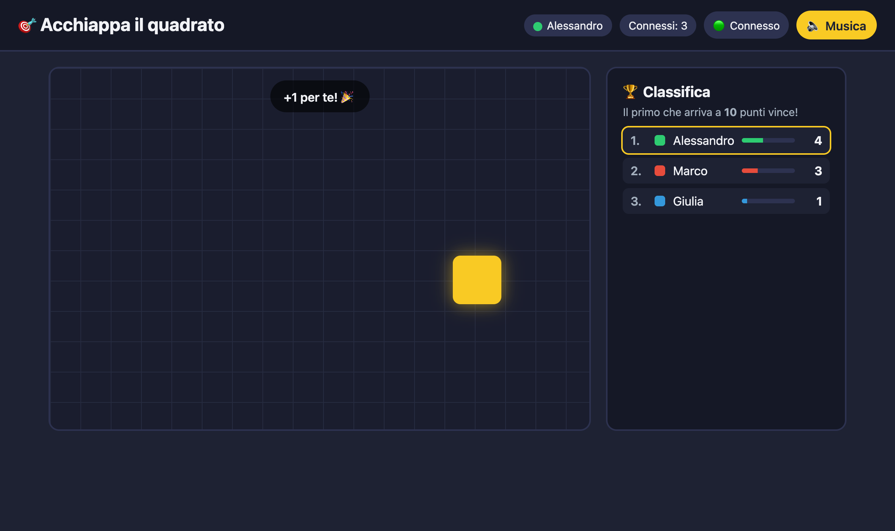

Acchiappa il quadrato è un gioco di riflessi per più giocatori. Il server fa comparire un quadrato giallo in un punto casuale del campo e lo invia a tutti i giocatori nello stesso istante: chi lo clicca per primo prende un punto. Il primo che arriva a 10 punti vince la partita. Si può giocare da più finestre dello stesso PC oppure da più PC e telefoni collegati alla stessa rete.
nodejs.org). Per controllare: node -vacchiappa-il-quadrato.acchiappa-il-quadrato.express e ws indicati nel package.json:
npm install
node_modules: l'installazione è completa.http://localhost:3000 e http://192.168.1.20:3000Ctrl + C nel terminale.http://localhost:3000 (sul PC del server).http://192.168.1.20:3000.
Basta aprire due o più finestre del browser su localhost:3000,
una accanto all'altra: ogni finestra è un giocatore diverso e si vede il quadrato muoversi
in contemporanea su tutte.


Il quadrato vale 1 punto. Conta solo il primo click che arriva al server; il quadrato si colora con il colore di chi l'ha preso.
Chi arriva per primo a 10 punti vince. A tutti compare la schermata con il nome del vincitore.
Dopo 5 secondi i punti si azzerano e parte subito una nuova partita. Si può entrare o uscire in qualsiasi momento.
| Problema | Soluzione |
|---|---|
npm start dà errore Cannot find module | Eseguire prima npm install nella cartella del progetto. |
| Errore EADDRINUSE (porta occupata) | Il server è già avviato in un altro terminale: chiuderlo con Ctrl + C. |
| Gli altri PC non si collegano | Controllare di essere sulla stessa rete e di usare l'IP mostrato nel terminale; consentire Node.js nel firewall. |
| Stato 🔴 Disconnesso | Il server è stato fermato: riavviarlo e ricaricare la pagina. |
| La musica non parte | Usare Chrome, Edge o Firefox e premere il pulsante 🔈 Musica. |